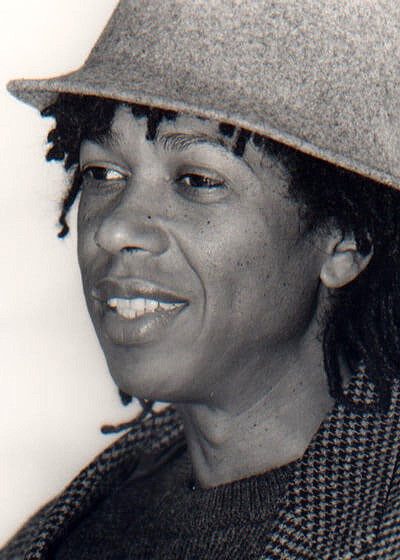
Início
Djavan Caetano Viana nasceu em Maceió, Alagoas, no dia 27 de janeiro de 1949. Filho de um ambulante, teve uma infância humilde. Desde pequeno acompanhava sua mãe, Virgínia, quando ela ia lavar roupa na beira do rio.
Com cinco anos, já observava as canções entoadas por sua mãe e as outras lavadeiras durante as lavagens das roupas. Cresceu ouvindo as músicas de Ângela Maria, Dalva de Oliveira, Orlando Silva, Jackson do Pandeiro e Luiz Gonzaga.
Djavan era um craque, e não só da voz e do ouvido privilegiados, mas com a bola nos pés. Aos 11 anos, ele jogava um excelente futebol nos campos de várzea poeirentos de Maceió. Chegou até a despontar como meio de campo juvenil do time do CSA, o principal da cidade, onde se quisesse teria feito carreira de jogador profissional.
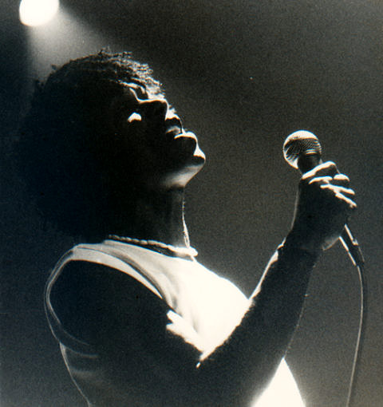
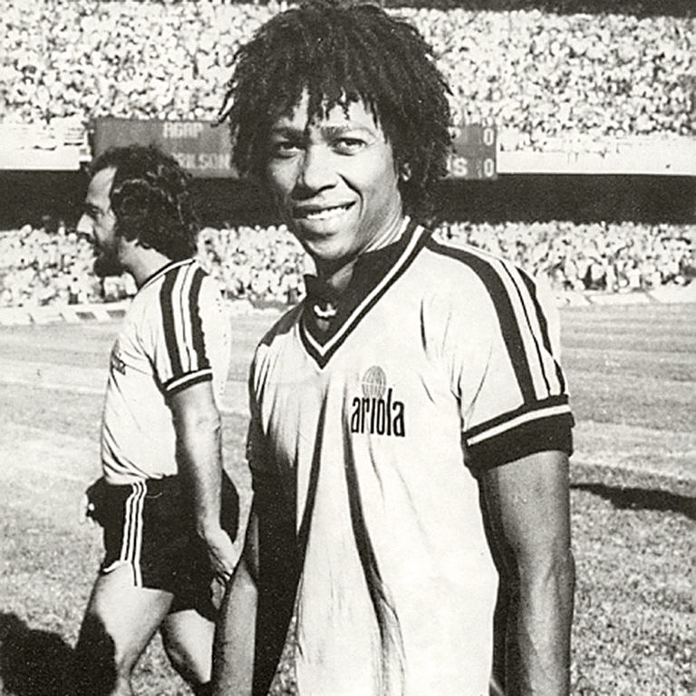
Carreira musical
Nos anos 60, Djavan decidiu seguir a carreira musical e, aos 23 anos, mudou-se para o Rio de Janeiro, onde trabalhou como crooner com a ajuda do radialista Edson Mauro. Sua voz o levou até João Araújo, presidente da Som Livre, e ele passou a gravar trilhas para novelas da TV Globo, como “Alegre Menina” em Gabriela (1975).
Em 1975, ficou em 2º lugar no Festival Abertura com “Fato Consumado”. Em 1976 lançou seu primeiro disco, A Voz, o Violão, impulsionado pelo sucesso de Flor de Lis. Seu segundo álbum, Djavan (1978), também fez sucesso e teve músicas regravadas por grandes nomes, como Maria Bethânia (Álibi) e Elis Regina (Samba Dobrado). Outras canções ganharam destaque em novelas e programas de TV.
Em 1980 lançou Alumbramento, com parcerias importantes como Aldir Blanc e Chico Buarque, e emplacou o grande sucesso Meu Bem Querer em várias novelas. No ano seguinte, lançou Seduzir e iniciou turnê com sua própria banda.
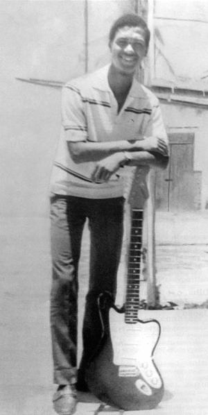
Reconhecimento internacional
Em 1982, música Flor de Lis, lançada no disco “A Voz e o Violão” de 1976, foi o primeiro sucesso de Djavan no mercado norte-americano, na voz de Carmen McRae, com o título Upside Down. Nesse mesmo ano, Djavan conquistou o reconhecimento internacional. Foi convidado pela CBS, futura Sony Music, para gravar o álbum “Luz” nos Estados Unidos, com a participação de Stevie Wonder na música Samurai.
Outros sucessos do álbum Luz foram: Sina, Pétala, Açaí e Capim. O álbum resultou de uma mescla da musicalidade brasileira com a influência do jazz americano.
“Lilás” (1984) foi o segundo disco gravado em Los Angeles. No dia da estreia, a faixa título bateu recorde de execuções nas rádios brasileiras. Outro grande sucesso do álbum foi a música Esquinas.
Djavan tornou-se um dos artistas brasileiros mais importantes de todos os tempos, lançando um hit atrás do outro.
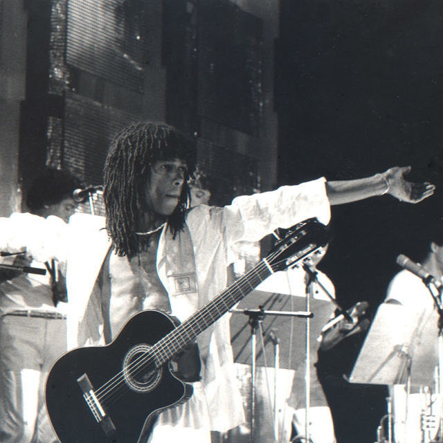
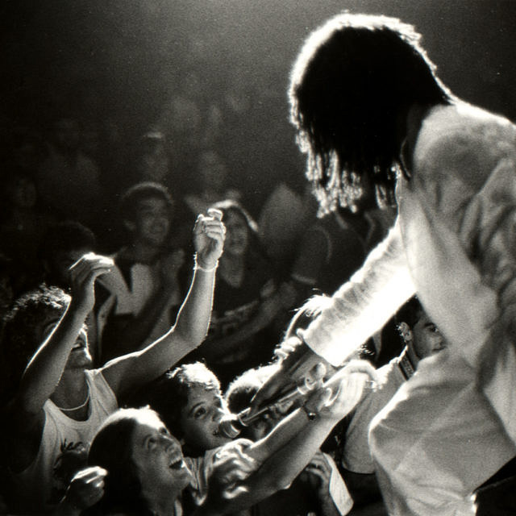
Década de 1990
A década de 1990 teve início com o lançamento do álbum “Coisa de Ascender” (1992). O grande destaque foi a música Linha do Equador, uma parceria com Caetano Veloso. Outros grandes destaques foram as músicas: Se, Boa Noite, Alívio e Outono. Contou também com a parceria da filha Flávia Virginia, no vocal em várias faixas.
A década também ficou marcada pelo primeiro disco produzido, arranjado e composto inteiramente pelo cantor: “Novena”, lançado em 1994, obra que marcou seus 20 anos de carreira.
Em 1996 lançou “Malásia”, que tem três faixas de outros compositores: Coração Leviano, de Paulinho da Viola, Sorri, versão de Braguinha para Smile, de Chaplin, e Correnteza, de Tom Jobim e Luiz Bonfá. A música Correnteza fez parte da trilha sonora da novela O Rei do Gado, e Nem Um Dia, foi tema da novela Por Amor.
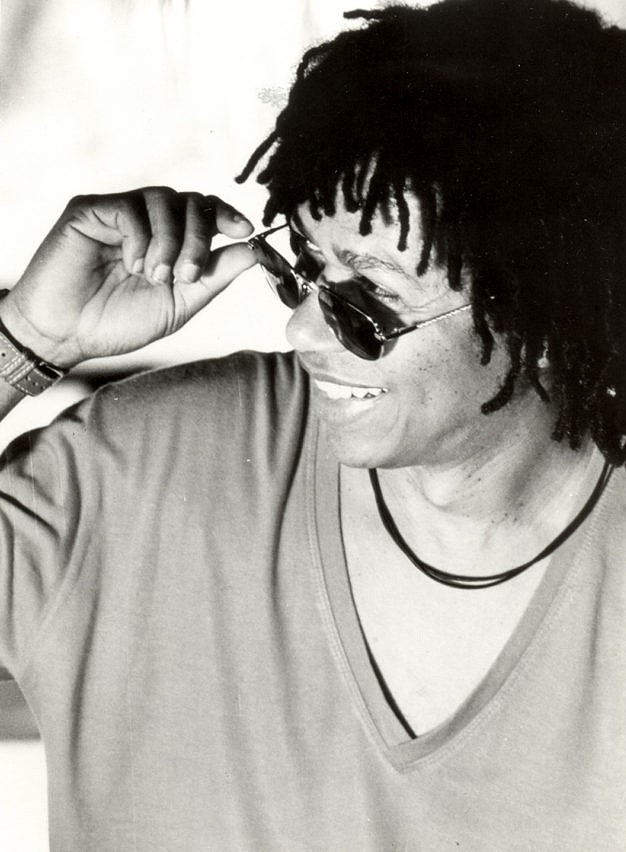
Anos 2000
Em 2000, Djavan lançou o álbum “Ao Vivo – Vols. 1 e 2”. A canção “Acelerou” foi eleita a Melhor Canção Brasileira do ano, prêmio que rendeu ao artista seu primeiro Grammy Latino. No mesmo ano, também recebeu os Prêmios Multishow de Melhor Cantor, Melhor Show e Melhor CD, consolidando sua posição como um dos maiores nomes da música brasileira.
Em 2004, Djavan conquistou sua independência artística com a criação da gravadora Luanda Records, pela qual lançou os álbuns “Vaidade” (2004), “Na Pista, Etc.” (2005) e “Matizes” (2007), trabalhos que mostraram sua versatilidade e a continuidade de sua carreira de forma autônoma.
Em 2010, lançou “Ária”, primeiro disco dedicado a interpretações de canções de outros compositores. O álbum recebeu o Grammy Latino de 2011 na categoria Melhor Álbum de Música, reforçando seu reconhecimento internacional.
Após quatro anos sem lançar composições próprias, Djavan apresentou “Rua dos Amores” (2012), no qual a faixa “Vive”, em parceria com Maria Bethânia, se tornou tema da novela Salve Jorge. Em seguida vieram “Vidas Pra Contar” (2015), que rendeu o Grammy Latino de Melhor Canção Brasileira em 2016, “Vesúvio” (2018) e “D” (2022), álbuns que consolidaram sua relevância e capacidade de inovar continuamente.
Djavan foi casado com Maria Aparecida entre 1972 e 1998, com quem teve três filhos: Max Viana, Flávia Virgínia e João Thiago Viana. Desde 2000, é casado com Rafaela Brunini, com quem tem dois filhos: Sofia Viana e Inácio Viana.
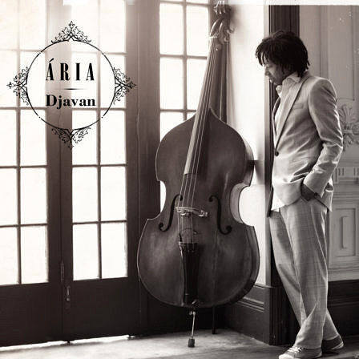
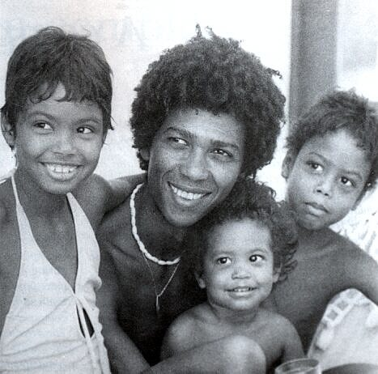
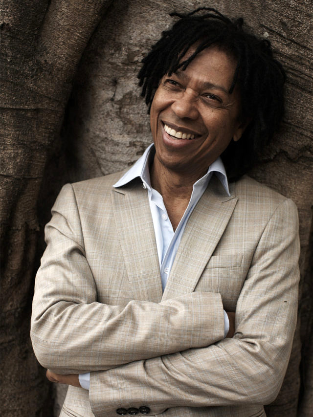
Música que Continua Viva
Hoje, com o lançamento de Improviso, seu 26º disco de inéditas, Djavan reafirma seu papel como artista inquieto e criativo, que continua explorando novos caminhos mesmo após décadas de carreira. Com este álbum, ele mostra que o amor, a melodia e a poesia ainda o movem com a mesma intensidade de sempre, e que a música permanece para ele um espaço de reinvenção e liberdade.
Djavan segue como uma referência viva da música brasileira, capaz de encantar quem acompanha sua trajetória há anos e conquistar novas gerações com sua sensibilidade. Sua obra continua relevante, pulsante e inspiradora, refletindo tanto o legado de sua carreira quanto a vitalidade de seu presente artístico.
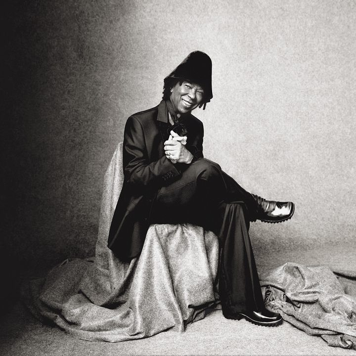